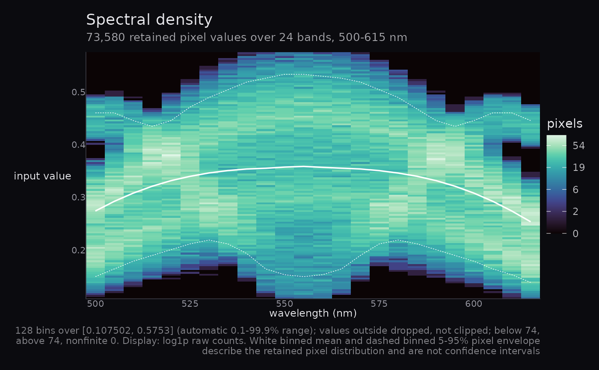

The joint distribution of reflectance against wavelength across every pixel in the cube, drawn as a two-dimensional histogram: a luminous band of probability mass with the mean spectrum threaded through it.
Arguments
- cube
An
hsi_cube(from hyperspectR) or a 3-D array with dimensions(rows, cols, bands).- nbins
Number of reflectance bins. Default
128.- limits
Numeric length-2 reflectance range to bin over.
NULL(default) uses the 0.1st and 99.9th percentiles of the finite data, so a handful of saturated pixels cannot flatten the whole figure.- transform
Count transform:
"log1p"(default) or"identity". Reflectance histograms are heavy-tailed, and on a linear count scale only the mode is visible. Colourbar labels are back-transformed, so the legend still reads true counts.- normalise
"none"(default) or"band". Per-band normalisation stops a band with many masked pixels from reading as empty.- palette
Palette name passed to
hsa_palette().- show_limits
Draw horizontal rules at the percentile limits the image functions would use. Default
FALSE.- probs
Percentiles for
stretch = "percentile". Defaultc(0.02, 0.98).
Details
This is the only composition here that is not an image, and it is the one
the others should be read against. Every rendering in this package applies a
contrast stretch; this figure shows the distribution that stretch is being
applied to, so a reader can see whether the limits are reasonable or whether
a striking image is the product of an aggressive one. Passing
show_limits = TRUE draws those limits directly onto the distribution.
Values outside limits are dropped, not clipped. Clipping would pile
their mass into the end bins and manufacture bright edges at the extremes,
which is exactly the kind of artefact this figure exists to expose.
Examples
cube <- hsa_demo_cube()
hsa_spectral_density(cube)
